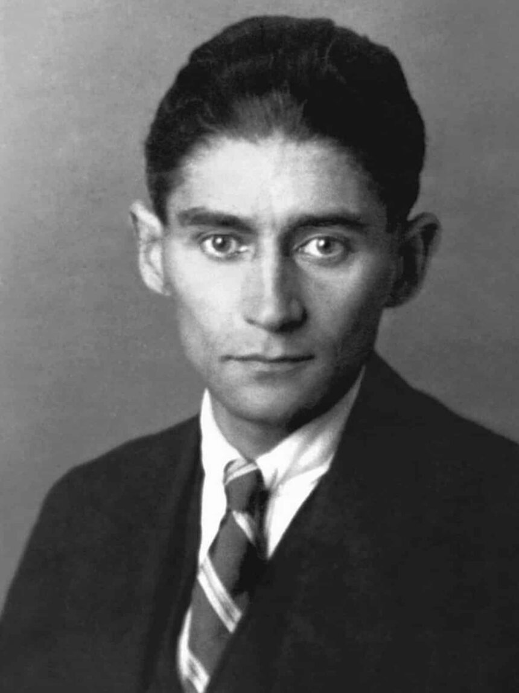

O universo sombrio e filosófico de um dos maiores autores do século XX

Este site foi criado para apresentar a genialidade de Franz Kafka, sua vida e suas obras mais marcantes. Aqui você encontrará uma análise detalhada da obra A Metamorfose, uma biografia completa do autor, sinopses de suas outras criações literárias e formas de contato com os curadores deste projeto.
Kafka é conhecido por transformar o absurdo, o sofrimento e a alienação em arte profunda. Seu legado influencia escritores, filósofos, cineastas e leitores até os dias de hoje.